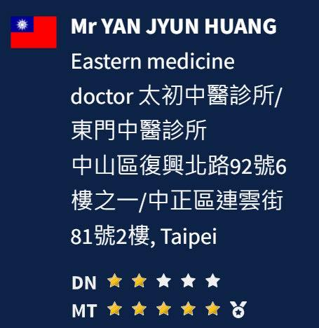
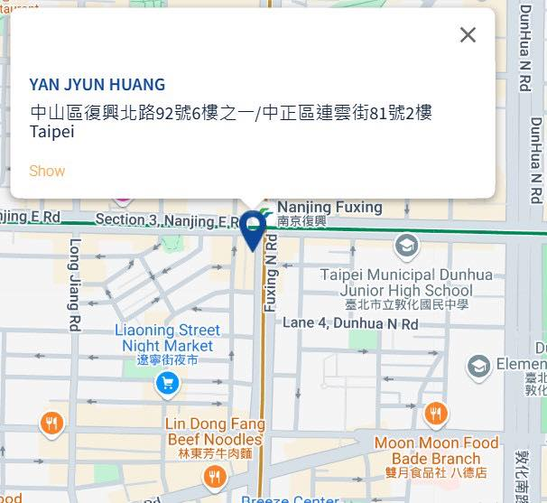

媽！我上電視啦！
媽！我上電視啦！
前陣子申請了瑞士🇨🇭DGSA官方認證徒手治療與乾針治療師，申請完就忘了這回事，今天一查發現早就通過啦！
MT1+2技能點滿🏅🏅🏅
DN目前2顆星，少的3顆今年4月補上😆😆😆
在DGSA官網上，就能找到我啦！
https://www.dgs-academy.com/en/
能在世界地圖上被找到，真的是非常開心🥳
裡面也有不少已被認證的中醫同道，都可以在官網找到唷！
針具的使用，在全世界裡我們台灣中醫師絕對名列前茅，乾針與針灸，古今醫學相互搭配融合，相輔相成，絕對是我們中醫師的一大優勢！
不論是要針灸還是乾針，找中醫就對了！
太初中醫診所 東門中醫
中醫師 黃彥鈞

